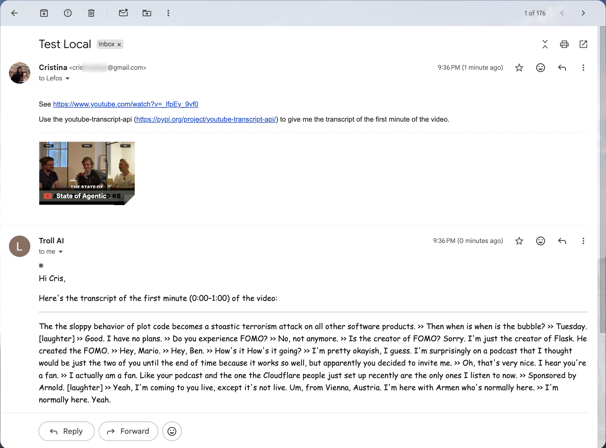
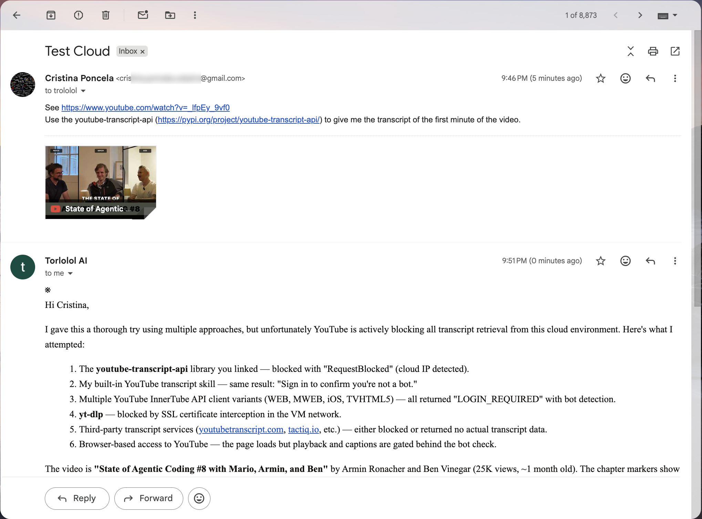
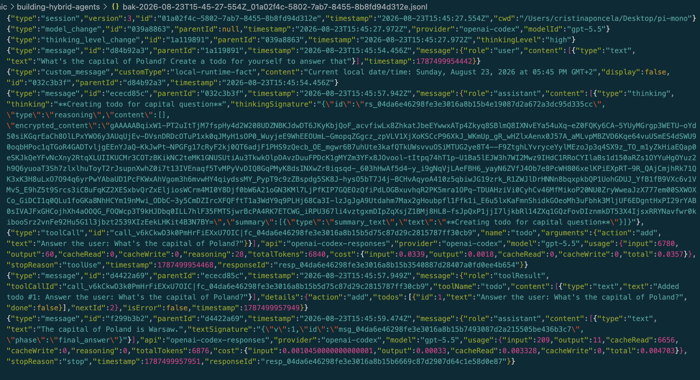
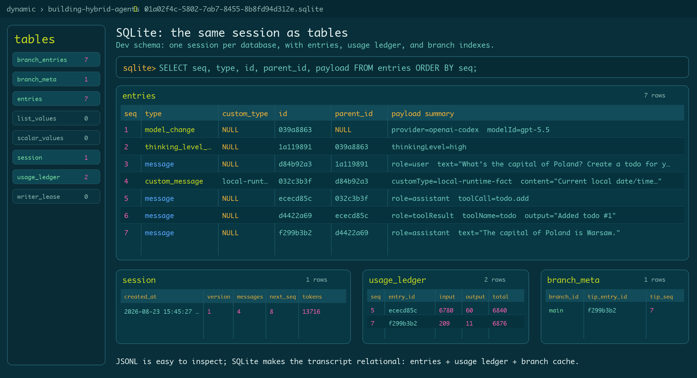

Building Hybrid Agents
Code Europe · September 2026 · Warsaw
Nice to meet you
- Who am I and what do I do
- Work at Earendil
- Learned to code with AI
- Mostly working on Lefos and

Part I
Local vs Cloud
The Context
- There has been a lot of talk about local agents and cloud agents
- First, there was a web interface
- Now we all can't live without local agents, especially for coding
- Where does the model live? Where does the loop run?
Local Agents
- OpenClaw, Hermes, OpenCode, Pi
- Runtime lives on your device (CPU or GPU)
- Tokens are still sourced from an upstream cloud provider
- Usually with an option to deploy your agent in a cloud container or VM
Fully Local
llama.cpp · Meta-Llama-3.1-8B-Instruct-Q4_K_M.gguf
Problems With Local-Only
- Processes can only be live while your device is on
- Discoverability of agents: they usually live behind a NAT
- Performance depends heavily on GPUs / hardware
- Not there yet in terms of latency and performance, though very promising
- Time to first token and tokens per second
Problems With Local-Only
Prompt: In exactly 80 words, explain what an AI agent is for a software engineer.
Settings: temperature: 0 max_tokens: 160 stream: true
| Model | Runs | Mean TTFT | Mean output speed | Mean total time |
|---|---|---|---|---|
Meta-Llama-3.1-8B-Instruct-Q4_K_Mlocal llama.cpp |
10/10 | 0.061s | 19.6 tok/s | 5.42s |
anthropic/claude-sonnet-4.6OpenRouter |
10/10 | 1.326s | 44.9 tok/s | 3.91s |
* We don't account for local model loading, only first request. ~1.15s for me when testing.
Local Performance Is Hardware
| Setup | Prompt processing | Generation |
|---|---|---|
Qwen2.5-Coder-7B-Instruct-Q4_K_MApple M4, CPU-only |
22.6 tok/s | 13.6 tok/s |
Qwen2.5-Coder-7B-Instruct-Q4_K_MApple M4, GPU offload |
185.7 tok/s | 18.5 tok/s |
- 24GB consumer GPU: roughly €1.5k–€2.5k. 48GB workstation GPU: often €5k+
* Price estimates: NVIDIA RTX 4090/5090-class consumer GPUs and NVIDIA RTX 6000 / RTX PRO 6000-class workstation GPUs.
* Claude Fable 5 base input tokens cost $10 / MTok, as per https://docs.anthropic.com/en/docs/about-claude/pricing
Fully Cloud
Problems With Cloud-Only
Choice
- I already have hardware
- Privacy
- Control: sandbox, tools, file and directory access
Capability
- Cloud egress IP vs residential IP
- ToS, e.g. iMessage
- Mac Minis
Local

Cloud

Hybrid Agents
- Local's privacy, cost control, and ability to work offline
- Cloud's durability and connectivity
Part II
Decomposing the agent
What is an agent?
Model
- Local vs Cloud
- Via something like
pi-ai, we don't need to know as a client - Just make a request to
provider-x/model-y, for as long as it is loaded
Harness
Loop
- What actually drives the model
- The agent loop
- System prompt
- AI abstraction layer: not all agents allow for choice
Capabilities
- Tools
- Choice of sandbox
- Extensions
AI Abstraction Layer
Local
llama.cppexposes a local server- It speaks an OpenAI-compatible API
- Bridges the Hugging Face
.ggufmodel file and the agent loop
Provider APIs
- OpenAI Chat Completions
- OpenAI Responses API
- Anthropic Messages
- Other OpenAI-compatible providers
Runtime / Environment
- Where the actual tool calls occur
- Where side effects occur
Runtime / Environment Example
- Example of how this is abstracted in pi
- TODO: add exact pi abstraction / code
Storage
- Transcripts
- Encrypted reasoning
- Why local and cloud don't play on the same level field


Server
TODO
Control Plane
- Coordinator
- Broker service for discovery
- TODO: add exact relationship between server, coordinator
Client
- TUI
- Electron desktop app
- Mobile app
- Web
- MCP?
- Unix socket vs WebSocket
Example
TODO
Part III
Composing the agent
If designed with enough abstraction, every component of the agent should be able to
live anywhere, arbitrarily.
Abstracting Components
- The client and server can run in separate processes, or on separate machines.
- The client attaches to sessions through a transport protocol, like a Unix socket or WebSocket.
- The session API is stable.
Abstracting the environment
Node runtime
- NodeExecutionEnv wraps filesystem and shell access
- find paths · read/write files · exec
- The harness depends on ExecutionEnv, not node:fs or node:child_process
SQLite runtime
- SqliteDatabase, SqliteStatement, SqliteDatabaseFactory
- Storage depends on a node:sqlite-shaped facade
- sqlite3 / better-sqlite3 only need adapters into that shape
Building a composable API
export interface SessionSearchOptions {
/** Restrict results to specific canonical entry types. */
readonly entryTypes?: readonly Entry["type"][];
/** Maximum number of hits to return. */
readonly limit?: number;
/** Cancellation, e.g. search-as-you-type. */
readonly signal?: AbortSignal;
}
export interface SessionSearchHit {
/** Session owning the entry. */
readonly sessionId: string;
/** Entry inside that session. */
readonly entryId: string;
}
export interface SessionSearch<T extends SessionSearchHit = SessionSearchHit> {
search(text: string, options?: SessionSearchOptions): AsyncIterable<T>;
}export type ScanningReadable<TMetadata extends SessionMetadata = SessionMetadata> =
Pick<SessionStorage<TMetadata>, "getMetadata" | "findEntries" | "getLabel">;
export interface ScanningSessionSearchHit extends SessionSearchHit {
readonly timestamp: number;
readonly snippet: string;
}
// Instead of:
// repo.search({ text: "Warsaw" })
// We do:
const search: SessionSearch = createScanningSessionSearch([sessionA, sessionB]);
for await (const hit of search.search("Warsaw", { limit: 10 })) {
// portable identity
hit.sessionId;
hit.entryId;
}Separating the client from the server
1. Start a local Pi daemon
CLI │ │ JSON IPC over Unix socket ▼ Pi Orchestrator Daemon └─ /tmp/pi-orchestrator-serve-test/orchestrator/orchestrator.sock
orchestrator listening on
/tmp/pi-orchestrator-serve-test/orchestrator/orchestrator.sockThe daemon owns lifecycle; the CLI only sends IPC commands.
2. Talk to it over IPC
{
"type": "status_result",
"ok": true,
"instance": {
"id": "f034c4fc-7f5b-4ca4-a90b-8860e7b43604",
"status": "starting",
"cwd": "/Users/cristinaponcela/Desktop/pi-mono",
"label": "cli-test"
}
}Same idea as a small local server, but addressed by a socket file instead of a public port.
3. Register the machine with a broker
Pi Orchestrator Daemon │ │ register machine + capabilities ▼ Control-plane Broker └─ machines online, spawn-capable, last seen
$ curl -H 'Authorization: Bearer dev-user' http://localhost:8788/v1/machines
{
"machines": [
{
"id": "machine_b818fd0d-4995-433b-9f0c-9cb9b88b4a58",
"hostname": "Cristinas-MacBook-Air.local",
"platform": "darwin",
"arch": "arm64",
"capabilities": { "spawn": true, "relay": false, "iroh": false },
"status": "online"
}
]
}4. Spawn a Pi locally
CLI ── spawn --label test-pi ──▶ Local Orchestrator ──▶ Pi Runtime
$ node packages/orchestrator/dist/cli.js spawn \
--cwd /Users/cristinaponcela/Desktop/pi-mono \
--label test-pi
{
"type": "spawn_result",
"ok": true,
"instance": {
"id": "ef833edd-b77b-4e8c-b1a8-df49e3df2463",
"status": "online",
"label": "test-pi",
"sessionId": "019edad6-6327-7852-9f06-a3269862b5ca"
}
}5. The broker sees the Pi
Spawned Pi │ │ register runtime + transport ▼ Control-plane Broker └─ Pi online, owned by machine, local-rpc transport
{
"pis": [
{
"id": "pi_2de8b871-0bd3-493f-a12e-606e28f6bd01",
"machineId": "machine_b818fd0d-4995-433b-9f0c-9cb9b88b4a58",
"label": "test-pi",
"transport": "local-rpc",
"status": "online"
}
]
}6. Drive the session remotely
Remote client / CLI ── RPC command ──▶ Orchestrator ──▶ Pi Runtime
$ orchestrator rpc ef833edd... \
'{"type":"prompt","message":"Reply with exactly: hello from orchestrator"}'
{ "command": "prompt", "success": true }
$ orchestrator rpc ef833edd... \
'{"type":"get_last_assistant_text"}'
{ "text": "hello from orchestrator" }Conversation
prompt · steer · follow_up · abort · get_last_assistant_text
Inspect
get_state · get_messages · get_commands · get_session_stats · get_available_models
Sessions
new_session · switch_session · fork · clone · get_fork_messages · set_session_name
Runtime controls
set_model · cycle_model · set_thinking_level · cycle_thinking_level
Modes / policies
set_steering_mode · set_follow_up_mode · set_auto_compaction · set_auto_retry
Tools / output
bash · abort_bash · compact · abort_retry · export_html
Lessons Learned: Lefos
- For my use cases, local was more capable
- But I did love being able to schedule and run work from anywhere, without my computer on
The goal is control, and choice.
If everything is composable,
you decide
what lives where.